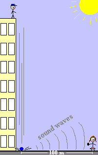

Identify the major source of error in each situation as either systematic or random:
A student is measuring the length of time for a ball to drop from the roof of a building. The timer is started when the student sees the ball start to come down, and is stopped when she hears the ball hit the ground. (Not the best way to do this, but hey, it's possible.) She is located about 100 m from where the ball hits the ground.